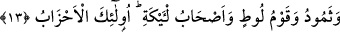
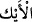
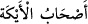

Buradaki “evtâd”da istiâre olmayıp, hakîkî anlamında kullanılmış olması da
mümkündür. Çünkü rivâyetlere göre Firavun’un insanları oturtarak işkence ettiği demir
kazıkları varmış. Birine öfkelendiğinde dört kazığın ortasına sırtüstü yatırır, el ve
ayaklarını bunlardan herbirine bağlatır ve o kişi gökle yer arasında ölünceye dek öylece
kalırmış. Bir başka rivâyete göre de adamı sırtüstü yere yatırıp el, ayak ve kafasını yere
mıhlatırmış.
Fakir (Bursevî) der ki: Bu rivâyet et-Tahrîm 66/11’in tefsirinde Firavun’un, hanımı
Asiye’nin -ileride geleceği üzere- Musa (a.s.)’a inanması üzerine el ve ayaklarından
mıhlattığı şeklindeki rivâyetlere daha uygundur.
13. Semûd, Lût kavmi ve Eyke halkı da yalanladılar. İşte bunlar da
(peygamberlere karşı) birleşen topluluklardır.
Salih (a.s.)’in kavmi “Semûd,”
İbn Abbâs der ki: Hz. Salih’in (a.s.) kavmi ona îman etmiş, fakat vefatından sonra
îmandan dönmüşlerdi. Bunun üzerine Allah, Salih’i (a.s.) diriltip kendilerine ikinci kez
peygamber tayin etmiş; o da onlara kendisinin “Salih” olduğunu söyleyince, onu
yalanlamışlardı. Hz. Salih’in ‘deve’ mûcizesini göstermesi üzerine, onu yine
yalanlayarak deveyi kesmişler ve Allah da onları helâk etmiştir.
Kâşifî der ki: “Bir kısmı îman edip çoğu yalanlamıştır. Deveyi kesip öldürmeleri
sebebiyle de helâk olmuşlardır.”
“Lût kavmi,”
Mücahid, bunların, her hanede on kişi olmak üzere dört yüz bin hanelik bir kavim
olduğunu söyler.
Atâ der ki: “Kıyamet günü, hiçbir peygamber olmayacak ki, kendileriyle birlikte
kavimlerinden bir grup ayağa kalkmasın (dirilmesin). Yalnız Lût kavmi hâriç; çünkü
Lût, tek başına ayağa kalkacaktır. Nitekim Keşfü’l-Esrâr’da da bu şekilde
kaydedilmiştir.
Şuayb kavminin ormanlık bölgede oturanları, yâni orman halkı olan “Eyke halkı da
yalanladılar.”
Râğıb el-Müfredât’ta der ki: Eyk (
), sarıp dolanan ağaca denir. “Eyke ashabı”
anlamına gelen (
)’nin, yerleşip ikamet ettikleri ormanlık bölgeye nisbetle bu
adı aldığı söylendiği gibi, Eyke’nin bir şehir adı olduğu da ifâde edilir.
“İşte bunlar da (peygamberlere karşı) birleşen topluluklardır.”
Bu âyette, mezkûr gruplardan bedel olup peygamberlerine karşı hizipleşen yâni
birleşip karşı koyanlar kasdedilmektedir. Bozguna uğraması muhakkak görülen Kureyş